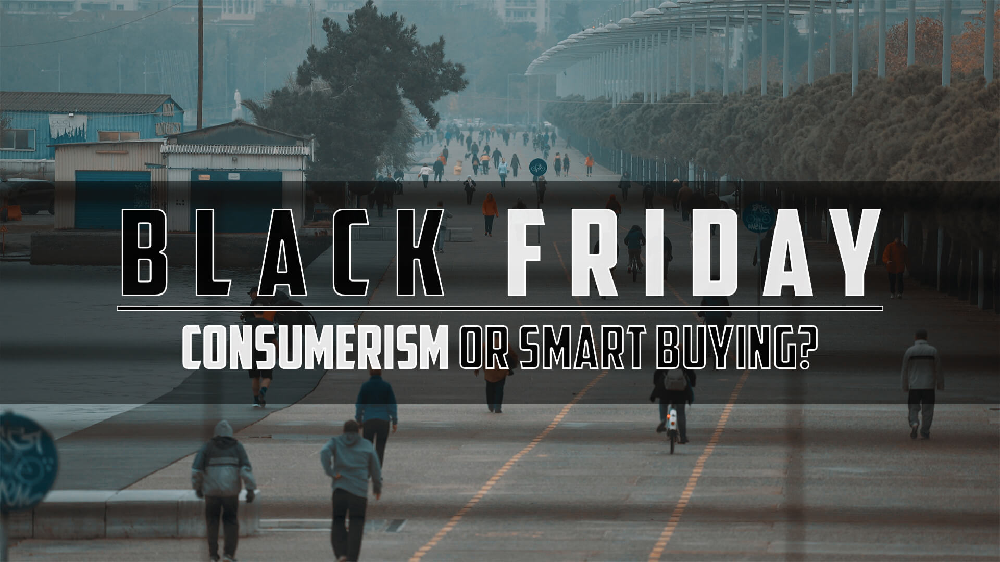

Language English
- Every year this country celebrates Thanksgiving and then goes out to splurge on Black Friday.
- Every year companies use all types of tricks to ring in more dollars.
- Every year consumers buy more clothes, more TVs, more crap than the previous year.
- The wheels of capitalism keep turning with no regard for the environment.
- Climate change is real and consumers have huge environmental impact
- We like to blame the government or industries for the Earth's problems, but in reality it is all derived from consumption.
- Most goods are not biodegradable and inevitably end up in landfills.
- While the first instinct with waste is to recycle, it is better to reuse and best to reduce.
Reduce -> Reuse -> Recycle
This black friday - Please Buy Less :)
Contributes to Github

Idioma Español
- Cada año este país celebra el Día de Acción de Gracias y luego sale a derrochar el Viernes Negro.
- Cada año las empresas utilizan todo tipo de trucos para ganar más dinero.
- Cada año los consumidores compran más ropa, más televisores, más basura que el año anterior.
- Las ruedas del capitalismo siguen girando sin tener en cuenta el medio ambiente.
- El cambio climático es real y los consumidores tienen un enorme impacto medioambiental.
- Nos gusta culpar al gobierno o a las industrias por los problemas de la Tierra, pero en realidad todo se deriva del consumo.
- La mayoría de las mercancías no son biodegradables y terminan inevitablemente en vertederos.
- Mientras que el primer instinto con los residuos es reciclar, es mejor reutilizar y reducir.
Reducir -> Reutilizar -> Reciclar
Este viernes negro - compra menos :)
Contribuye en Github